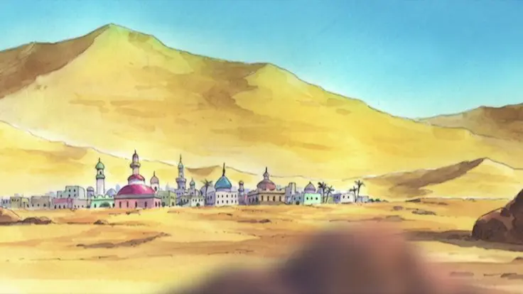
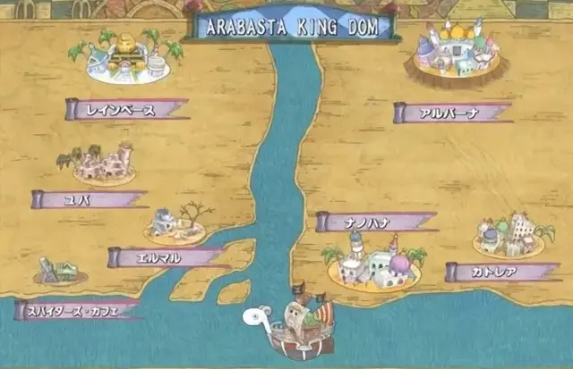
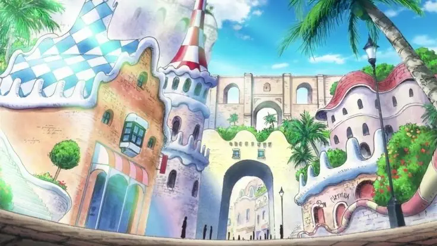
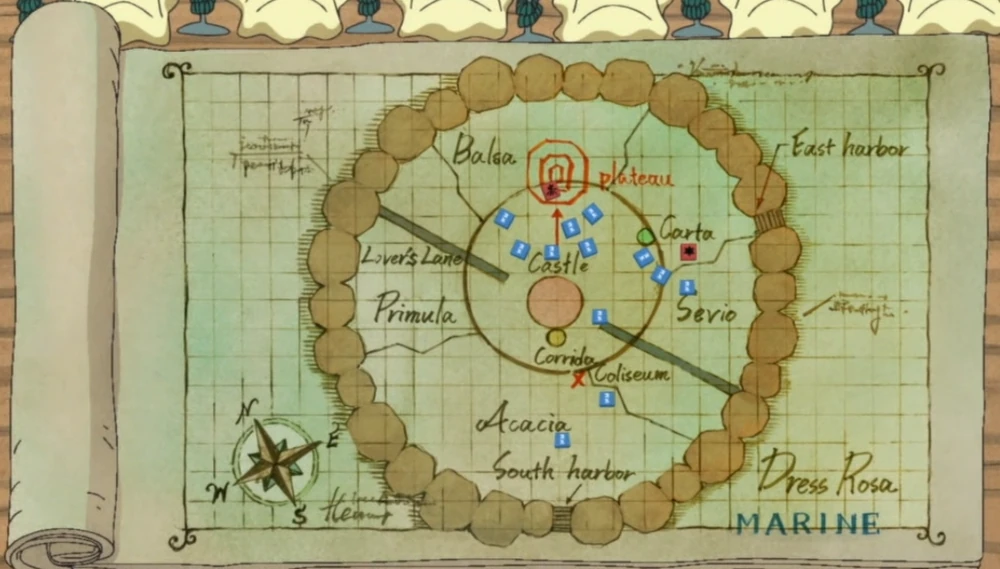
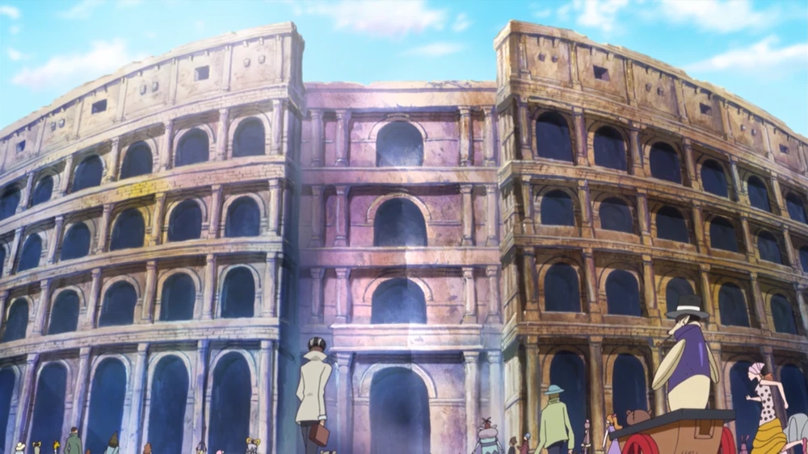
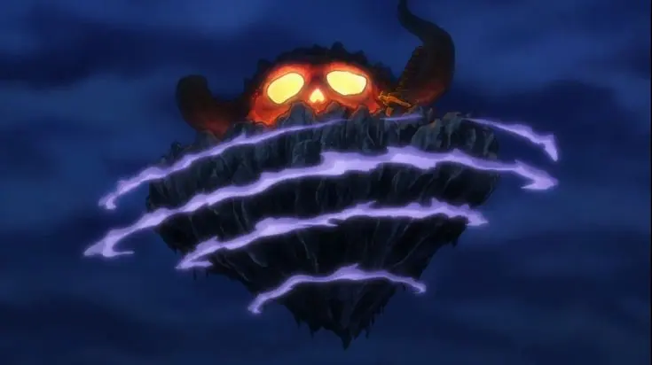
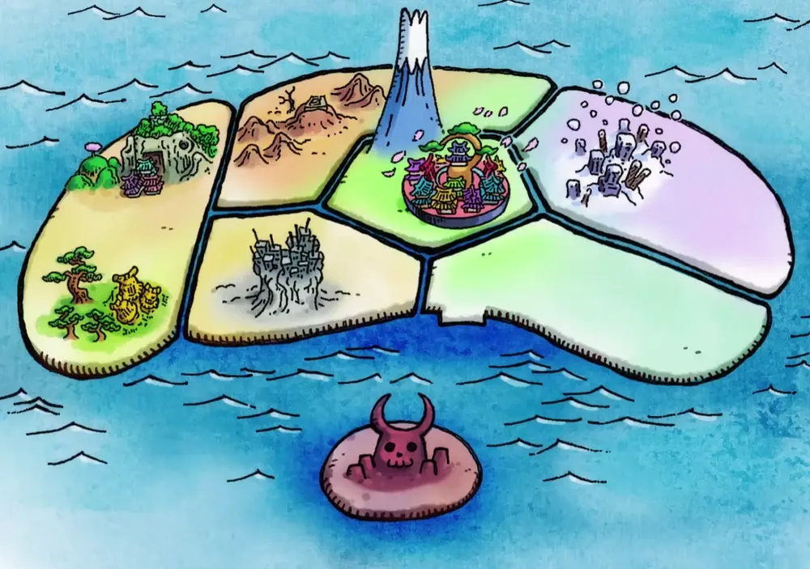
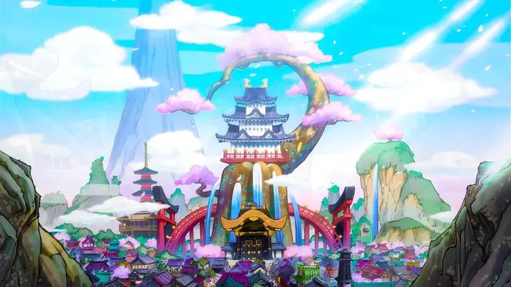

Reino de Arabasta

Desierto de Sandora - Inspierado en el Sáhara

Mapa de Arabasta
Alubarna -Inspirada en Jodhpur, India
Dressrosa

Ciudad de Acacia - Inspirada en Barcelona

Mapa de Dressrosa

Coliseo Corrida - Inspirado en el Coliseo de Roma
País de Wano

Onigashima

Mapa de Wano

Ciudad de las flores - Inspirada en Japón